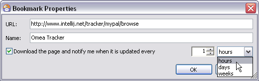
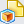

Working with Web Pages and Bookmarks
When you find a web page that contains information that’s useful or relevant to some project or activity, you create a bookmark (or Favorite in Internet Explorer© parlance) in your browser so that you can quickly go back to that page. This is fine, as far as it goes, but Omea Reader Omea Pro takes it a step further.
Referring back to a bookmarked page is fine as long as you are connected to the Internet. But what if you need the information while working on a laptop while flying to a conference? Some browsers have the capability to save web pages to your computer. That gets you the content offline, but you have to save the page manually, and then you can’t access it with the browser bookmark for the page, so you have to remember where you stored it.
Omea ReaderOmea Pro is like a super bookmark utility. When you find a Web page that you want to refer to again, you can create a bookmark for it in Omea ReaderOmea Pro. The page is then downloaded (and later refreshed) according to your preference settings, and the content is indexed just like any other resource. This means that you can:
- View your bookmarked pages off line and refresh them automatically when you go on line.
- Organize web pages using any of Omea Reader’s Omea Pro’s organizing tools.
- Search for content in your downloaded pages.
- Create Annotations and/or Clippings which can in turn be organized and searched.
- Link web pages to other resources. For example, you might create a link between some page on a customer’s web site and the Contact info of someone at that company.
Omea ReaderOmea Pro can import your existing bookmarks from Microsoft Internet Explorer©, Mozilla© browsers, and Opera© and keep the bookmarks synchronized with Internet Explorer and Mozilla browsers.
Importing Existing Bookmarks
You can import your existing bookmarks from MS Internet Explorer©, Mozilla©, Firefox©, and Opera©.
Importing Internet Explorer Favorites
Importing from Internet Explorer (IE) creates Bookmark Folders corresponding to IE’s Favorites folder structure, and creates the corresponding bookmarks in each folder.
To import Internet Explorer Favorites:
- In the Main window, select the Web tab (so you can see the imported Favorites).
- On the Main menu, choose Tools | Options, then Internet: Favorites.
- Check Import Favorites from Internet Explorer.
Your IE Favorites will be imported after you click OK to close the Options dialog.
Importing Mozilla Bookmarks
Importing from Internet Explorer (IE) creates Bookmark Folders corresponding to IE’s Favorites folder structure, and creates the corresponding bookmarks in each folder.
Omea ReaderOmea Pro detects the Mozilla browser(s) you have installed, and the profile(s) defined for each. If you have more than one browser (both Mozilla and Firefox, for example), you can import the bookmarks from several profiles of two browsers.
To import Mozilla bookmarks:
- In the Main window, select the Web tab (so you can see the imported bookmarks).
- On the Main menu, choose Tools | Options, then Internet: Mozilla Bookmarks.
- In the list box, select a Mozilla profile from which to import bookmarks.
Your Mozilla bookmarks will be imported after you click OK to close the Options dialog.
Importing Opera Bookmarks
Now you can import the bookmarks which you have in Opera. To turn this possibility on, check Import bookmarks from Opera options and choose when you want changes you make with bookmarks in Opera to be reflected in Omea ReaderOmea Pro. The imported bookmarks appear in the Bookmarks pane (“Opera” bookmarks folder) of the Web tab.
Synchronizing Bookmarks and Web Pages
You can synchronize your Omea ReaderOmea Pro bookmarks with MS Internet Explorer© and Mozilla-based browsers. You can also synchronize the local downloaded version of web pages with the corresponding online page. This section explains these synchronizations.
Automatic Export to Internet Explorer©
You can optionally export Omea ReaderOmea Pro bookmarks to Internet Explorer (IE). If you imported IE Favorites then made some changes to them and turned this option on, the changes are automatically exported back to IE. The same goes for new bookmarks you create in Omea ReaderOmea Pro. This enables you to keep your Omea ReaderOmea Pro Bookmarks synchronized with IE Favorites.
To export Bookmarks to IE Favorites:
- On the Main menu, choose Tools | Options, then Internet: Favorites.
- Check Export changes into Internet Explorer.
Your bookmarks will be exported after you click OK to close the Options dialog. Changes to bookmarks from that point forward will be exported as they occur.
Automatic Export to Mozilla Browsers
You can optionally export Omea ReaderOmea Pro bookmarks to Mozilla browsers. If you imported IE Favorites then made some changes to them and turned this option on, changes you make to the imported bookmarks are automatically exported back to Mozilla© and Firefox©. The same goes for new bookmarks you create in Omea ReaderOmea Pro in “Mozilla” bookmarks folder. This enables you to keep your Omea ReaderOmea Pro bookmarks synchronized with Mozilla© and Firefox© bookmarks.
Working with Several Mozilla and Firefox Profiles
You may have several user profiles in Mozilla© and Firefox© and a different set of bookmarks in different profiles but changes you make in Omea will be exported only to the profile you currently work with in your Mozilla-based browsers. Once you switch the profiles, Omea will export changes in to the browser if you have made some (unless you specify otherwise in Omea's options).
Synchronizing Local Pages with Online Pages
It may be important to synchronize your downloaded local version of web pages with the online version. There are 2 options for doing this:
- Setting an automatic download interval for pages
- Explicitly refreshing pages yourself.
By default, bookmarked pages are not automatically synchronized with the online version.
Setting the automatic download interval
Each bookmark in Omea ReaderOmea Pro has a download interval property that controls how often your local copy of the page will be refreshed from the online version. You can optionally set this interval when you create a Bookmark (see Creating a Bookmark), and change it any time.
To set the automatic download interval:
- Select the Bookmark in the Bookmarks pane or in the Items List.
- Right-click on the item and choose Properties
The Bookmark Properties dialog where you can specify the
download interval to refresh web pages - Check the check box and specify the number of time units to wait before downloading the page.
- In the drop-down list, choose the time unit: hours, days, or weeks.
The interval will be applied to the Bookmark after you click OK to close the dialog.
If you close Omea ReaderOmea Pro before the download interval, the page will be refreshed after you restart if the download interval has passed.
Explicitly synchronizing a page
You can synchronize your local copy of a web page with the online version any time, provided your computer is connected to the internet.
To synchronize off-line and on-line versions:
- In the Web tab, select a Bookmark in the Bookmarks pane or the resource Items List.
- Right-click and choose Refresh on the context menu.
Use Bookmark context menu to sync off-line and on-line page versions
If the local version of the bookmarked page differs from the on-line version, a progress indicator appears on the status bar showing the progress of the download. If the pages are in identical, basically, nothing happens.
Adding New Bookmarks
You can create new Bookmarks for web pages in the Bookmarks pane, or in any Bookmark Folder.
To create a new Bookmark:
- Make sure the Web tab is selected and the Bookmarks pane is visible in the Left Sidebar.
- Load the desired page in your web browser if it is not loaded already, then Copy the URL of the web page to the Clipboard.
- Return to Omea ReaderOmea Pro and click the Add Bookmark icon on the Bookmarks pane toolbar.
- In the Add Bookmark dialog, paste the URL of the web page in the URL field.
- In the Name field, type a name for the page. This name will appear in the Bookmarks pane.
- If you want to create the new bookmark in a Bookmark Folder, select the folder in the Create in folder drop-down list. If you don’t specify a folder, the Bookmark will appear in the Bookmarks pane on the same level as Bookmark Folders.
Optionally check the box for setting an automatic download interval for refreshing the page, and set the time interval as desired.
The new Bookmark will be created after you click OK to close the dialog.
The Add Bookmark dialog has the same controls as the Bookmark Properties dialog shown in Setting the automatic download interval above.
Tips and Tricks
Creating Bookmarks from Viewed Pages
Suppose someone sends you an e-mail with a web link and you follow that link in Omea Pro.
Suppose someone posts a newsgroup article with a web link and you follow that link in Omea Reader.
The Add Bookmark button appears to the left of the URL bar in Omea ReaderOmea Pro, so you can add a bookmark for it right away rather than copying and pasting the URL into a new bookmark you create manually.
Creating new Bookmarks and Bookmark Folders
Your Omea ReaderOmea Pro bookmarks appear in the Bookmarks pane. This pane appears in the Left Sidebar when the Web tab is selected in the Main window. If not visible, use the Bookmarks toggle button along the left edge of the Left Sidebar. If the sidebar panel is hidden, choose View | Left Sidebar on the Main menu.
Creating Bookmark Folders
You can organize bookmarks into folders. If you import bookmarks from a supported browser, any folders that exist there are recreated in Omea ReaderOmea Pro bookmarks. As you continue to work in Omea Reader Omea Pro, you may want to add new folders for new bookmarks.
To add a new Bookmark Folder:
- Make sure the Web tab is selected and the Bookmarks pane is visible in the Left Sidebar.
- In the Bookmarks pane, click the New Folder icon on the Bookmarks pane toolbar. A new folder appears in the Bookmarks pane with in-place name editing activated.
- Type a name for the new folder and press Enter.
You can also create folders using the New Folder command. Select IE Favorites, Mozilla, Firefox or Opera top-level folder and on context menu, select New Folder.
Renaming Bookmarks Folder
To rename the bookmarks folder:
- In the Web tab, select a bookmark folder in the Bookmarks pane.
- Do one of the following:
- From the Edit menu, select Rename Folder
- Press F2.
- Right-click and choose Rename on the context menu
Please note that you cannot rename the top-level bookmark folders (“IE Favorites”, “Mozilla”, and “Opera”).
Customizing Properties of Several Bookmarks
You can now customize the properties of several bookmarks at a time and set the properties for the bookmark folders.
To customize properties of several bookmarks:
- Select several bookmarks (press and hold down Ctrl) or select the bookmarks folder in the Bookmarks pane.
- Do one of the following:
- Right-click and select Properties on the shortcut menu.
- From the Edit menu, select Properties.
In the Bookmarks Properties window which opens, check the Download pages and notify me when they are updated every option and select the time unit.
Organizing Web Pages
Once you have created a Bookmark, it is downloaded according to your options setting in Web Page options. Once downloaded, the content of the bookmarked page is indexed. The web page is then a resource like any other and you can used any of the organizing features with it.
Annotating and Categorizing Bookmarks
You can now add some textual notes and assign Categories for bookmarks which you create from within Omea, or bookmarks imported from Internet Explorer, Opera, Mozilla, and Firefox.
To annotate and categorize bookmark:
- Either create a new bookmark or select the existing bookmark in the Items List.
- Click Annotate and Categorize button () on Omea toolbar.
- The Annotate and Categorize window opens; in this window you can add the note for the bookmark and select a Category from the list of Categories (which were previously defined in Omea).
- Click OK to save the changes.
If you assigned a Category to the bookmark,you can access the bookmark if you select this Category in the Views and Categories pane of the Web tab or All Resources tab. To access all web pages you have annotated in Omea, navigate to the Annotated View in the Views and Categories pane.
Deleting Bookmarks and Bookmark Folders
If you no longer need a Bookmark or a Bookmark Folder, deleting is quite easy. Select the Bookmark or Bookmark Folder in the Bookmarks pane and press Del(ete).
If you delete a folder, any bookmarks it contains will also be deleted.